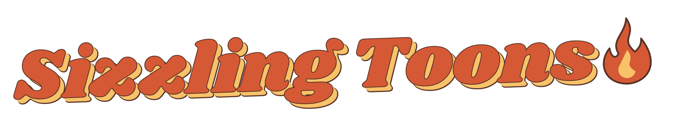

SKYLINE GAMING / MEDIA KIT

Marketing assets
Current game artwork, transparent character images and desktop / mobile screenshots.
Download all assets · 2.8 MB ZIPAsset specifications & game description · Play the game
Logos
Sizzling Toons: SVG (outlined) · PNG (transparent)
Skyline Gaming: Original SVG · PNG (transparent)
Characters
Transparent PNG · 256 × 256 px · Native game resolution
Background
Download background · 1671 × 941 PNG
Screenshots